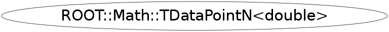

class ROOT::Math::TDataPointN<double>
This class is also known as (typedefs to this class)
ROOT::Math::TDataPointN<Double_t>, ROOT::Math::TDataPointNFunction Members (Methods)
public:
| virtual | ~TDataPointN<double>() |
| static UInt_t | Dimension() |
| double | GetCoordinate(unsigned int iAxis) const |
| double | GetWeight() const |
| bool | Less(ROOT::Math::TDataPointN<double>& rPoint, unsigned int iAxis) const |
| ROOT::Math::TDataPointN<double>& | operator=(const ROOT::Math::TDataPointN<double>&) |
| void | SetCoordinate(unsigned int iAxis, double fValue) |
| static void | SetDimension(UInt_t dim) |
| void | SetWeight(float fWeight) |
| ROOT::Math::TDataPointN<double> | TDataPointN<double>() |
| ROOT::Math::TDataPointN<double> | TDataPointN<double>(const ROOT::Math::TDataPointN<double>&) |
Data Members
private:
| static UInt_t | kDimension | |
| ROOT::Math::TDataPointN<double>::value_type | m_fWeight | |
| ROOT::Math::TDataPointN<double>::value_type* | m_vCoordinates |
Class Charts
{kind=link}
{kind=link}
{kind=link}
{kind=link}

Function documentation
_val_type GetCoordinate(unsigned int iAxis) const
bool Less(ROOT::Math::TDataPointN<double>& rPoint, unsigned int iAxis) const
void SetCoordinate(unsigned int iAxis, double fValue)